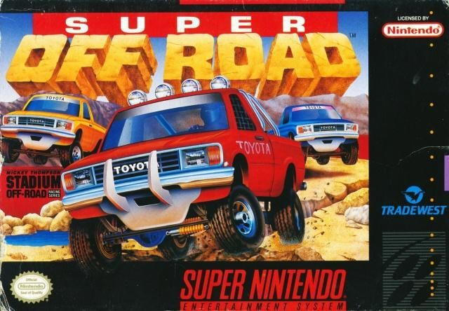
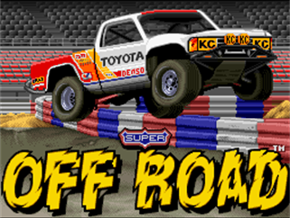
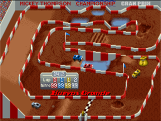

A Brief History of Super Off Road
Where the game came from, and how it ended up on the SNES.
Arcade origins
Ivan "Ironman" Stewart's Super Off Road was developed and published by Leland Corporation for arcades, released in February 1989. Designer John Morgan served as game designer, project lead, and lead programmer, and even wrote custom ray-tracing software to render the game's vehicle art. In a nice bit of studio trivia, the CPU-controlled trucks in the original arcade cabinet were "driven" using AI tuned by staff members under in-house nicknames - "Madman" Sam Powell (who also composed the music), "Hurricane" Earl Stratton, and "Jammin'" John Morgan himself.
The arcade original featured 8 tracks and a bird's-eye view of up to three trucks racing at once, with an upgrade shop between races - spend your winnings on better acceleration, top speed, handling, and tires. That earn-and-upgrade loop was a fairly novel idea for a racing game at the time, and it's a structure still used across the genre today.
Ports and versions
Super Off Road's success led to ports across nearly every platform of the era, handled by a range of different studios and publishers:
- NES (1990) - published by Tradewest (Leland's console-publishing arm) in North America, and by Nintendo itself in PAL regions.
- Home computers (1990) - Virgin Games published versions for the Amiga, Amstrad CPC, Atari ST, Commodore 64, IBM PC, and ZX Spectrum.
- Super Nintendo (1991) - published by Tradewest, developed by Software Creations.
- Genesis / Mega Drive (1992) - published by Ballistic.
- Game Boy (1992) - published by NMS Software.
- Game Gear (1992–1993) - published by Virgin Games.
- Master System (1993) - published by Virgin Games.
- Atari Lynx (1993) - published by Telegames.
An Atari Jaguar version was also announced but never released. The arcade original has also lived on in modern compilations, appearing in both Midway Arcade Treasures 3 (2005) and Midway Arcade Origins (2012).
The Super Nintendo version



The SNES release arrived in December 1991 in North America, followed by Japan on July 3, 1992 (published there by Pack-In-Video), and Europe/Germany on June 24, 1993. Tradewest published the US and German releases. Unlike the earlier console ports, this version wasn't handled in-house - it was developed by Software Creations, a UK-based studio.
This was Software Creations' very first SNES project, and it left one small, charming fingerprint on the game: because the studio's sound driver was still being worked out, the entire soundtrack plays roughly a quarter-step sharp.
Toyota trucks and 16 tracks
The SNES version drops the arcade's "Ivan Stewart" branding entirely - there's no license or likeness of the real racer here. Instead, Toyota trucks take center stage, logo and all, with a soundtrack cue in the "Set Up" screen built directly around a Toyota commercial jingle. The one real-driver nod that remains is to the late off-road racer Mickey Thompson, whose name the game carries in two places: the "Mickey Thompson Stadium Off-Road Racing Series" branding on the box, and the banner across the top of every race screen, which reads "Mickey Thompson Championship Gran Prix".
The substitution goes further than the packaging. In the arcade original the grey truck was Ivan Stewart's own; in the SNES version that truck is credited to Mickey Thompson instead, its driver listed on the roster as M.T - reportedly used without approval from his son, the racer Danny Thompson. So the driver the arcade cabinet was named after is absent from the Super Nintendo game entirely, while a different real off-road racer stands in his place.
Track count also grew significantly for this version: 16 tracks, up from 8 in the original arcade cabinet and 12 in the Sega Master System port - making the SNES release the most content-complete version of the game at the time. Combined with each track's forward/reverse direction and the game's 64-race cycle, the LaunchBox Games Database entry for the SNES release counts 64 distinct track/direction configurations in total.
Those 16 tracks aren't just a bigger number, either: track-by-track, the extra 8 beyond the arcade's original set are exactly the 8 tracks introduced by Leland's 1989 arcade "Track Pak" add-on board - Shortcut, Cuttoff Pass, Pig Bog, Rio Trio, Leapin' Lizards, Redoubt-about, Boulder Hill, and Volcano Valley. Track Pak was an optional cabinet upgrade that never became universal even in arcades, and none of the other home versions carry the full set: the NES, Genesis, Game Boy, Game Gear, Atari Lynx, and home computer ports all stick to the original 8, and even the 12-track Master System port falls short of all 16. That makes the SNES release the only console port with the complete arcade experience - base game plus Track Pak - about as close to a definitive edition of Super Off Road as any console ever got.
A Follin brothers soundtrack
Musically, this is a notable release: it's the first SNES game to carry a soundtrack by the Follin brothers, Tim and Geoff, both well-regarded composers from the 8- and 16-bit era. Tim wrote the title theme (itself an arrangement inspired by a Guns N' Roses song), while Geoff composed the remaining in-game tracks. True to the era's tools, the whole score was written directly in assembly language, with note pitch, length, and effects all hand-specified in hexadecimal.
Reception
Contemporary reviews were solid at launch - Electronic Gaming Monthly's four reviewers scored the SNES version 7, 6, 6, and 7 out of 10 - and the wider Super Off Road arcade original went on to rank 35th on Amiga Power's list of the best games of all time.
The SNES version's reputation has only grown since. It's a recurring pick on modern "best SNES racing games" retrospectives - RetroDodo ranked it 6th, describing it as having "a similar feel to Micro Machines with actual courses instead of made up tracks," and praising the risk-and-reward of racing to earn money for truck upgrades. HonestGamers scored it 3.5 out of 5, singling out the two-player mode as the game's standout feature: "It's surprising how often a 'quick game' turns into two or three hours of trash talking and gnashing teeth." Decades on, it's still regarded as one of the system's most enjoyably frantic multiplayer racers.
Sources: Wikipedia (Super Off Road), VGMPF Wiki (Super Off Road (SNES)), LaunchBox Games Database, RetroDodo, HonestGamers.